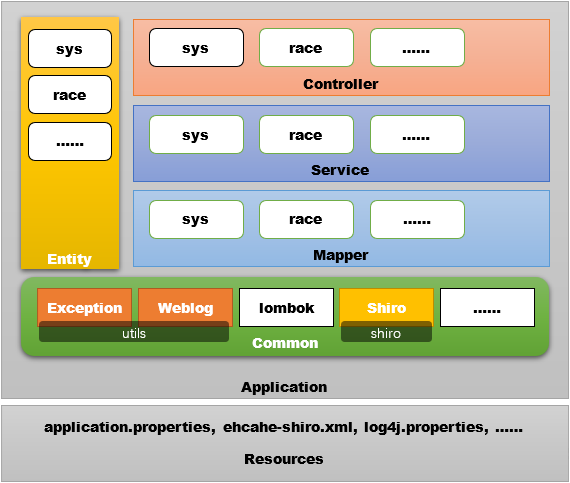

第06章 后端设计
6.1 数据库设计

Table1: user
DROP TABLE IF EXISTS `user`; CREATE TABLE `user` ( `username` varchar(255) CHARACTER SET utf8 COLLATE utf8_general_ci NOT NULL, `password` varchar(50) CHARACTER SET utf8 COLLATE utf8_general_ci NULL DEFAULT '123456', `email` varchar(100) CHARACTER SET utf8 COLLATE utf8_general_ci NULL DEFAULT NULL, `roleid` varchar(100) CHARACTER SET utf8 COLLATE utf8_general_ci NULL DEFAULT '0', PRIMARY KEY (`username`) USING BTREE ) ENGINE = InnoDB CHARACTER SET = utf8 COLLATE = utf8_general_ci ROW_FORMAT = Compact; INSERT INTO `user` VALUES ('admin', '123456', 'admin@lnnu.edu.cn', '0001'); INSERT INTO `user` VALUES ('dean', '123456', 'dean@lnnu.edu.cn', '1001'); INSERT INTO `user` VALUES ('student', '123456', 'student@lnnu.edu.cn', '0101'); INSERT INTO `user` VALUES ('super', '123456', 'super@lnnu.edu.cn', '0099'); INSERT INTO `user` VALUES ('teacher', '123456', 'teacher@lnnu.edu.cn', '0101');
Table2: role
DROP TABLE IF EXISTS `role`; CREATE TABLE `role` ( `id` varchar(20) CHARACTER SET utf8 COLLATE utf8_general_ci NOT NULL, `name` varchar(255) CHARACTER SET utf8 COLLATE utf8_general_ci NULL DEFAULT NULL, `comment` varchar(255) CHARACTER SET utf8 COLLATE utf8_general_ci NULL DEFAULT NULL, PRIMARY KEY (`id`) USING BTREE ) ENGINE = InnoDB CHARACTER SET = utf8 COLLATE = utf8_general_ci ROW_FORMAT = Compact; INSERT INTO `role` VALUES ('0000', 'user', '登录就有的权限'); INSERT INTO `role` VALUES ('0001', 'admin', '系统管理员'); INSERT INTO `role` VALUES ('0099', 'super', '使用全部功能的权限'); INSERT INTO `role` VALUES ('0101', 'student', '学生用户'); INSERT INTO `role` VALUES ('0801', 'leader-race', '竞赛队长'); INSERT INTO `role` VALUES ('0901', 'leader-comp', '公司法人'); INSERT INTO `role` VALUES ('1001', 'teacher', '教师用户'); INSERT INTO `role` VALUES ('1101', 'dean', '大院长'); INSERT INTO `role` VALUES ('1102', 'dean-science', '科研院长'); INSERT INTO `role` VALUES ('1103', 'dean-teaching', '教学院长'); INSERT INTO `role` VALUES ('1104', 'dean-manage', '行政院长'); INSERT INTO `role` VALUES ('1105', 'dean-lab', '实验院长');
Table3: permission
DROP TABLE IF EXISTS `permission`; CREATE TABLE `permission` ( `id` int(10) UNSIGNED NOT NULL AUTO_INCREMENT, `menuid` varchar(200) CHARACTER SET utf8 COLLATE utf8_general_ci NULL DEFAULT NULL, `roleid` varchar(100) CHARACTER SET utf8 COLLATE utf8_general_ci NULL DEFAULT NULL, `enable` char(2) CHARACTER SET utf8 COLLATE utf8_general_ci NOT NULL DEFAULT '1' COMMENT '0：该功能不可用，1：该功能可用', PRIMARY KEY (`id`) USING BTREE ) ENGINE = InnoDB AUTO_INCREMENT = 10 CHARACTER SET = utf8 COLLATE = utf8_general_ci ROW_FORMAT = Compact; INSERT INTO `permission` VALUES (1, 'sys', '0000', '1'); INSERT INTO `permission` VALUES (2, 'sys:menu', '0000', '1'); INSERT INTO `permission` VALUES (3, 'sys:perm', '0000', '1'); INSERT INTO `permission` VALUES (4, 'sys:prof', '0000', '1'); INSERT INTO `permission` VALUES (5, 'sys:role', '0000', '1'); INSERT INTO `permission` VALUES (6, 'sys:user', '0000', '1'); INSERT INTO `permission` VALUES (7, 'usr:forget', '0001', '1'); INSERT INTO `permission` VALUES (8, 'usr:password', '0001', '1'); INSERT INTO `permission` VALUES (9, 'usr:profile', '0001', '1');
Table4: menu
DROP TABLE IF EXISTS `menu`; CREATE TABLE `menu` ( `id` varchar(100) CHARACTER SET utf8 COLLATE utf8_general_ci NOT NULL, `name` varchar(255) CHARACTER SET utf8 COLLATE utf8_general_ci NULL DEFAULT NULL, `title` varchar(255) CHARACTER SET utf8 COLLATE utf8_general_ci NULL DEFAULT NULL, `url` varchar(255) CHARACTER SET utf8 COLLATE utf8_general_ci NULL DEFAULT NULL, `type` char(2) CHARACTER SET utf8 COLLATE utf8_general_ci NOT NULL DEFAULT '1' COMMENT '0：功能，1：菜单', PRIMARY KEY (`id`) USING BTREE ) ENGINE = InnoDB CHARACTER SET = utf8 COLLATE = utf8_general_ci ROW_FORMAT = Compact; INSERT INTO `menu` VALUES ('sys', '系统', '系统', '/sys', '1'); INSERT INTO `menu` VALUES ('sys:menu', '菜单管理', '菜单管理', '/sys/nemu', '1'); INSERT INTO `menu` VALUES ('sys:perm', '权限管理', '权限管理', '/sys/perm', '1'); INSERT INTO `menu` VALUES ('sys:prof', '个人信息', '个人信息', '/sys/prof', '1'); INSERT INTO `menu` VALUES ('sys:role', '角色管理', '角色管理', '/sys/role', '1'); INSERT INTO `menu` VALUES ('sys:user', '用户管理', '用户管理', '/sys/user', '1'); INSERT INTO `menu` VALUES ('usr:forget', '密码找回', '密码找回', '/usr/forget', '1'); INSERT INTO `menu` VALUES ('usr:password', '修改密码', '修改密码', '/usr/password', '1'); INSERT INTO `menu` VALUES ('usr:profile', '个人信息', '完善个人信息', '/usr/profile', '1');
Table5: profile
DROP TABLE IF EXISTS `profile`; CREATE TABLE `profile` ( `uid` varchar(255) CHARACTER SET utf8 COLLATE utf8_general_ci NOT NULL, `phone` varchar(255) CHARACTER SET utf8 COLLATE utf8_general_ci NULL DEFAULT NULL, `photo` varchar(255) CHARACTER SET utf8 COLLATE utf8_general_ci NULL DEFAULT NULL, `sex` varchar(8) CHARACTER SET utf8 COLLATE utf8_general_ci NULL DEFAULT NULL, `age` date NULL DEFAULT NULL, `name` varchar(20) CHARACTER SET utf8 COLLATE utf8_general_ci NULL DEFAULT NULL, `nick` varchar(20) CHARACTER SET utf8 COLLATE utf8_general_ci NULL DEFAULT NULL, PRIMARY KEY (`uid`) USING BTREE ) ENGINE = InnoDB CHARACTER SET = utf8 COLLATE = utf8_general_ci ROW_FORMAT = Compact; INSERT INTO `profile` VALUES ('201110110007', '12345678901', NULL, '男', '2019-03-14', '拴住', '狗剩'); INSERT INTO `profile` VALUES ('500005', '01234567890', NULL, '女', '1919-03-14', '兰花', '美女');
6.2 软件结构设计

F:\ZDW-4-DEVELOP\WORKSPACE\WHEAP │ build.gradle │ settings.gradle │ └─src ├─main │ ├─java │ │ └─com │ │ └─wheap │ │ │ ServletInitializer.java │ │ │ WheapApplication.java │ │ │ │ │ ├─common │ │ │ ├─shiro │ │ │ │ ShiroConfiguration.java │ │ │ │ UserRealm.java │ │ │ │ │ │ │ └─utils │ │ │ GlobleExceptionAop.java │ │ │ WebLogAspect.java │ │ │ │ │ ├─controller │ │ │ ├─race │ │ │ └─sys │ │ │ MenuController.java │ │ │ PermissionController.java │ │ │ ProfileController.java │ │ │ RoleController.java │ │ │ UserController.java │ │ │ │ │ ├─entity │ │ │ ├─race │ │ │ └─sys │ │ │ Menu.java │ │ │ MenuTree.java │ │ │ Permission.java │ │ │ Profile.java │ │ │ Role.java │ │ │ User.java │ │ │ │ │ ├─mapper │ │ │ ├─race │ │ │ └─sys │ │ │ MenuMapper.java │ │ │ PermissionMapper.java │ │ │ ProfileMapper.java │ │ │ RoleMapper.java │ │ │ UserMapper.java │ │ │ │ │ └─service │ │ ├─race │ │ └─sys │ │ │ IMenuService.java │ │ │ IPermissionService.java │ │ │ IProfileService.java │ │ │ IRoleService.java │ │ │ IUserService.java │ │ │ │ │ └─impl │ │ MenuServiceImpl.java │ │ PermissionServiceImpl.java │ │ ProfileServiceImpl.java │ │ RoleServiceImpl.java │ │ UserServiceImpl.java │ │ │ └─resources │ │ application.properties │ │ ehcache-shiro.xml │ │ log4j.properties │ │ │ ├─static │ │ index.html │ │ │ └─templates │ index.html │ └─test └─java └─com └─wheap WheapApplicationTests.java
6.3 build.gradle
plugins { id 'org.springframework.boot' version '2.1.3.RELEASE' id 'java' id 'war' } apply plugin: 'io.spring.dependency-management' group = 'com.wheap' version = '0.0.1-SNAPSHOT' sourceCompatibility = '1.8' repositories { mavenCentral() } dependencies { implementation 'org.springframework.boot:spring-boot-starter-aop' implementation 'org.springframework.boot:spring-boot-starter-jdbc' implementation 'org.springframework.boot:spring-boot-starter-web' implementation 'org.springframework.boot:spring-boot-starter-thymeleaf' implementation 'org.mybatis.spring.boot:mybatis-spring-boot-starter:2.0.0' implementation 'org.apache.shiro:shiro-spring:1.4.0' implementation 'org.apache.shiro:shiro-ehcache:1.4.0' implementation 'com.fasterxml.jackson.core:jackson-databind:2.9.8' implementation 'org.projectlombok:lombok:1.18.6' runtimeOnly 'mysql:mysql-connector-java' providedRuntime 'org.springframework.boot:spring-boot-starter-tomcat' testImplementation 'org.springframework.boot:spring-boot-starter-test' }
6.4 resources
- application.properties
repos=f:/~ spring.datasource.url=jdbc:mysql://localhost:3306/apscore?useUnicode=true&useJDBCCompliantTimezoneShift=true&useLegacyDatetimeCode=false&serverTimezone=UTC spring.datasource.username=root spring.datasource.password= spring.datasource.driver-class-name=com.mysql.cj.jdbc.Driver #mybatis.mapper-locations=classpath:mapper/*.xml mybatis.configuration.log-impl=org.apache.ibatis.logging.stdout.StdOutImpl spring.thymeleaf.suffix=.html spring.thymeleaf.mode=HTML5 spring.thymeleaf.encoding=UTF-8
- ehcache-shiro.xml
<?xml version="1.0" encoding="UTF-8"?> <ehcache updateCheck="false" name="cacheManagerConfigFile"> <defaultCache maxElementsInMemory="10000" eternal="false" timeToIdleSeconds="120" timeToLiveSeconds="120" overflowToDisk="false" diskPersistent="false" diskExpiryThreadIntervalSeconds="120" memoryStoreEvictionPolicy="LRU" /> <cache name="shiro-activeSessionCache" eternal="false" maxElementsInMemory="10000" overflowToDisk="false" timeToIdleSeconds="0" timeToLiveSeconds="0" statistics="true"> </cache> </ehcache>
- log4j.properties
################################################################################ #①配置根Logger，其语法为： # #log4j.rootLogger =[level],appenderName,appenderName2,... #level是日志记录的优先级，分为OFF,TRACE,DEBUG,INFO,WARN,ERROR,FATAL,ALL ##Log4j建议只使用四个级别，优先级从低到高分别是DEBUG,INFO,WARN,ERROR #通过在这里定义的级别，您可以控制到应用程序中相应级别的日志信息的开关 #比如在这里定义了INFO级别，则应用程序中所有DEBUG级别的日志信息将不被打印出来 #appenderName就是指定日志信息输出到哪个地方。可同时指定多个输出目的 ################################################################################ ################################################################################ #②配置日志信息输出目的地Appender，其语法为： # #log4j.appender.appenderName =fully.qualified.name.of.appender.class #log4j.appender.appenderName.optionN =valueN # #Log4j提供的appender有以下几种： #1)org.apache.log4j.ConsoleAppender(输出到控制台) #2)org.apache.log4j.FileAppender(输出到文件) #3)org.apache.log4j.DailyRollingFileAppender(每天产生一个日志文件) #4)org.apache.log4j.RollingFileAppender(文件大小到达指定尺寸的时候产生一个新的文件) #5)org.apache.log4j.WriterAppender(将日志信息以流格式发送到任意指定的地方) # #1)ConsoleAppender选项属性 # -Threshold = DEBUG:指定日志消息的输出最低层次 # -ImmediateFlush = TRUE:默认值是true,所有的消息都会被立即输出 # -Target = System.err:默认值System.out,输出到控制台(err为红色,out为黑色) # #2)FileAppender选项属性 # -Threshold = INFO:指定日志消息的输出最低层次 # -ImmediateFlush = TRUE:默认值是true,所有的消息都会被立即输出 # -File = C:\log4j.log:指定消息输出到C:\log4j.log文件 # -Append = FALSE:默认值true,将消息追加到指定文件中，false指将消息覆盖指定的文件内容 # -Encoding = UTF-8:可以指定文件编码格式 # #3)DailyRollingFileAppender选项属性 #-Threshold = WARN:指定日志消息的输出最低层次 #-ImmediateFlush = TRUE:默认值是true,所有的消息都会被立即输出 # -File =C:\log4j.log:指定消息输出到C:\log4j.log文件 # -Append= FALSE:默认值true,将消息追加到指定文件中，false指将消息覆盖指定的文件内容 #-DatePattern='.'yyyy-ww:每周滚动一次文件,即每周产生一个新的文件。还可以按用以下参数: # '.'yyyy-MM:每月 # '.'yyyy-ww:每周 # '.'yyyy-MM-dd:每天 # '.'yyyy-MM-dd-a:每天两次 # '.'yyyy-MM-dd-HH:每小时 # '.'yyyy-MM-dd-HH-mm:每分钟 #-Encoding = UTF-8:可以指定文件编码格式 # #4)RollingFileAppender选项属性 #-Threshold = ERROR:指定日志消息的输出最低层次 #-ImmediateFlush = TRUE:默认值是true,所有的消息都会被立即输出 # -File =C:/log4j.log:指定消息输出到C:/log4j.log文件 # -Append= FALSE:默认值true,将消息追加到指定文件中，false指将消息覆盖指定的文件内容 #-MaxFileSize = 100KB:后缀可以是KB,MB,GB.在日志文件到达该大小时,将会自动滚动.如:log4j.log.1 #-MaxBackupIndex = 2:指定可以产生的滚动文件的最大数 #-Encoding = UTF-8:可以指定文件编码格式 ################################################################################ ################################################################################ #③配置日志信息的格式(布局)，其语法为： # #log4j.appender.appenderName.layout=fully.qualified.name.of.layout.class #log4j.appender.appenderName.layout.optionN= valueN # #Log4j提供的layout有以下几种： #5)org.apache.log4j.HTMLLayout(以HTML表格形式布局) #6)org.apache.log4j.PatternLayout(可以灵活地指定布局模式) #7)org.apache.log4j.SimpleLayout(包含日志信息的级别和信息字符串) #8)org.apache.log4j.TTCCLayout(包含日志产生的时间、线程、类别等等信息) #9)org.apache.log4j.xml.XMLLayout(以XML形式布局) # #5)HTMLLayout选项属性 #-LocationInfo = TRUE:默认值false,输出java文件名称和行号 #-Title=Struts Log Message:默认值 Log4JLog Messages # #6)PatternLayout选项属性 #-ConversionPattern = %m%n:格式化指定的消息(参数意思下面有) # #9)XMLLayout选项属性 #-LocationInfo = TRUE:默认值false,输出java文件名称和行号 # #Log4J采用类似C语言中的printf函数的打印格式格式化日志信息，打印参数如下： #%m 输出代码中指定的消息 #%p 输出优先级，即DEBUG,INFO,WARN,ERROR,FATAL #%r 输出自应用启动到输出该log信息耗费的毫秒数 #%c 输出所属的类目,通常就是所在类的全名 #%t 输出产生该日志事件的线程名 #%n 输出一个回车换行符，Windows平台为“\r\n”，Unix平台为“\n” #%d 输出日志时间点的日期或时间，默认格式为ISO8601，也可以在其后指定格式 # 如：%d{yyyy年MM月dd日HH:mm:ss,SSS}，输出类似：2012年01月05日 22:10:28,921 #%l 输出日志事件的发生位置，包括类目名、发生的线程，以及在代码中的行数 # 如：Testlog.main(TestLog.java:10) #%F 输出日志消息产生时所在的文件名称 #%L 输出代码中的行号 #%x 输出和当前线程相关联的NDC(嵌套诊断环境),像javaservlets多客户多线程的应用中 #%% 输出一个"%"字符 # # 可以在%与模式字符之间加上修饰符来控制其最小宽度、最大宽度、和文本的对齐方式。如： # %5c: 输出category名称，最小宽度是5，category<5，默认的情况下右对齐 # %-5c:输出category名称，最小宽度是5，category<5，"-"号指定左对齐,会有空格 # %.5c:输出category名称，最大宽度是5，category>5，就会将左边多出的字符截掉，<5不会有空格 # %20.30c:category名称<20补空格，并且右对齐，>30字符，就从左边交远销出的字符截掉 ################################################################################ ################################################################################ #④指定特定包的输出特定的级别 #log4j.logger.org.springframework=DEBUG ################################################################################ #OFF,systemOut,logFile,logDailyFile,logRollingFile,logMail,logDB,ALL log4j.rootLogger=ALL,systemOut,logFile,logDailyFile,logRollingFile,logMail,logDB #输出到控制台 log4j.appender.systemOut= org.apache.log4j.ConsoleAppender log4j.appender.systemOut.layout= org.apache.log4j.PatternLayout log4j.appender.systemOut.layout.ConversionPattern= [%-5p][%-22d{yyyy/MM/dd HH:mm:ssS}][%l]%n%m%n log4j.appender.systemOut.Threshold= DEBUG log4j.appender.systemOut.ImmediateFlush= TRUE log4j.appender.systemOut.Target= System.out #输出到文件 log4j.appender.logFile= org.apache.log4j.FileAppender log4j.appender.logFile.layout= org.apache.log4j.PatternLayout log4j.appender.logFile.layout.ConversionPattern= [%-5p][%-22d{yyyy/MM/dd HH:mm:ssS}][%l]%n%m%n log4j.appender.logFile.Threshold= DEBUG log4j.appender.logFile.ImmediateFlush= TRUE log4j.appender.logFile.Append= TRUE log4j.appender.logFile.File= ../Struts2/WebRoot/log/File/log4j_Struts.log log4j.appender.logFile.Encoding= UTF-8 #按DatePattern输出到文件 log4j.appender.logDailyFile= org.apache.log4j.DailyRollingFileAppender log4j.appender.logDailyFile.layout= org.apache.log4j.PatternLayout log4j.appender.logDailyFile.layout.ConversionPattern= [%-5p][%-22d{yyyy/MM/dd HH:mm:ssS}][%l]%n%m%n log4j.appender.logDailyFile.Threshold= DEBUG log4j.appender.logDailyFile.ImmediateFlush= TRUE log4j.appender.logDailyFile.Append= TRUE log4j.appender.logDailyFile.File= ../Struts2/WebRoot/log/DailyFile/log4j_Struts log4j.appender.logDailyFile.DatePattern= '.'yyyy-MM-dd-HH-mm'.log' log4j.appender.logDailyFile.Encoding= UTF-8 #设定文件大小输出到文件 log4j.appender.logRollingFile= org.apache.log4j.RollingFileAppender log4j.appender.logRollingFile.layout= org.apache.log4j.PatternLayout log4j.appender.logRollingFile.layout.ConversionPattern= [%-5p][%-22d{yyyy/MM/dd HH:mm:ssS}][%l]%n%m%n log4j.appender.logRollingFile.Threshold= DEBUG log4j.appender.logRollingFile.ImmediateFlush= TRUE log4j.appender.logRollingFile.Append= TRUE log4j.appender.logRollingFile.File= ../Struts2/WebRoot/log/RollingFile/log4j_Struts.log log4j.appender.logRollingFile.MaxFileSize= 1MB log4j.appender.logRollingFile.MaxBackupIndex= 10 log4j.appender.logRollingFile.Encoding= UTF-8 #用Email发送日志 log4j.appender.logMail= org.apache.log4j.net.SMTPAppender log4j.appender.logMail.layout= org.apache.log4j.HTMLLayout log4j.appender.logMail.layout.LocationInfo= TRUE log4j.appender.logMail.layout.Title= Struts2 Mail LogFile log4j.appender.logMail.Threshold= DEBUG log4j.appender.logMail.SMTPDebug= FALSE log4j.appender.logMail.SMTPHost= SMTP.163.com log4j.appender.logMail.From= xly3000@163.com log4j.appender.logMail.To= xly3000@gmail.com #log4j.appender.logMail.Cc= xly3000@gmail.com #log4j.appender.logMail.Bcc= xly3000@gmail.com log4j.appender.logMail.SMTPUsername= xly3000 log4j.appender.logMail.SMTPPassword= 1234567 log4j.appender.logMail.Subject= Log4j Log Messages #log4j.appender.logMail.BufferSize= 1024 #log4j.appender.logMail.SMTPAuth= TRUE #将日志登录到MySQL数据库 log4j.appender.logDB= org.apache.log4j.jdbc.JDBCAppender log4j.appender.logDB.layout= org.apache.log4j.PatternLayout log4j.appender.logDB.Driver= com.mysql.jdbc.Driver log4j.appender.logDB.URL= jdbc:mysql://127.0.0.1:3306/xly log4j.appender.logDB.User= root log4j.appender.logDB.Password= 123456 log4j.appender.logDB.Sql= INSERT INTOT_log4j(project_name,create_date,level,category,file_name,thread_name,line,all_category,message)values('Struts2','%d{yyyy-MM-ddHH:mm:ss}','%p','%c','%F','%t','%L','%l','%m')
6.5 commons
- GlobleExceptionAop.java
package com.wheap.utils; import org.springframework.web.bind.annotation.ControllerAdvice; import org.springframework.web.bind.annotation.ExceptionHandler; import org.springframework.web.bind.annotation.ResponseBody; @ControllerAdvice public class GlobleExceptionAop { @ExceptionHandler(Exception.class) @ResponseBody public String runtimeException(Exception exception) { return "Globle Exception Aop!" + exception.toString(); } }
- WebLogAspect.java
package com.wheap.utils; import java.util.Enumeration; import javax.servlet.http.HttpServletRequest; import org.aspectj.lang.JoinPoint; import org.aspectj.lang.annotation.AfterReturning; import org.aspectj.lang.annotation.Aspect; import org.aspectj.lang.annotation.Before; import org.aspectj.lang.annotation.Pointcut; import org.springframework.stereotype.Component; import org.springframework.web.context.request.RequestContextHolder; import org.springframework.web.context.request.ServletRequestAttributes; import lombok.extern.slf4j.Slf4j; @Aspect @Component @Slf4j public class WebLogAspect { @Pointcut("execution(public * com.wheap..*.*(..))") public void webLog() { } @Before("webLog()") public void doBefore(JoinPoint joinPoint) throws Throwable{ ServletRequestAttributes attributes = (ServletRequestAttributes)RequestContextHolder.getRequestAttributes(); HttpServletRequest request = attributes.getRequest(); log.info("URL : " + request.getRequestURL().toString()); log.info("HTTP_METHOD : " + request.getMethod()); log.info("IP : " + request.getRemoteAddr()); Enumeration<String> enu = request.getParameterNames(); while(enu.hasMoreElements()) { String name = (String) enu.nextElement(); log.info("name:{},value:{}",name,request.getParameter(name)); } } @AfterReturning(returning = "ret",pointcut="webLog()") public void doAfterReturning(Object ret) throws Throwable{ log.info("RESPONSE : " + ret); } }
- ShiroConfiguration.java
package com.wheap.shiro; import java.util.HashMap; import java.util.LinkedHashMap; import java.util.Map; import javax.servlet.Filter; import org.apache.shiro.cache.ehcache.EhCacheManager; import org.apache.shiro.session.mgt.eis.JavaUuidSessionIdGenerator; import org.apache.shiro.session.mgt.eis.MemorySessionDAO; import org.apache.shiro.spring.LifecycleBeanPostProcessor; import org.apache.shiro.spring.security.interceptor.AuthorizationAttributeSourceAdvisor; import org.apache.shiro.spring.web.ShiroFilterFactoryBean; import org.apache.shiro.web.mgt.DefaultWebSecurityManager; import org.apache.shiro.web.servlet.SimpleCookie; import org.apache.shiro.web.session.mgt.DefaultWebSessionManager; import org.springframework.aop.framework.autoproxy.DefaultAdvisorAutoProxyCreator; import org.springframework.context.annotation.Bean; import org.springframework.context.annotation.Configuration; @Configuration public class ShiroConfiguration { /** * ShiroFilterFactoryBean 处理拦截资源文件问题。 * 注意：单独一个ShiroFilterFactoryBean配置是或报错的，以为在 * 初始化ShiroFilterFactoryBean的时候需要注入： * SecurityManager Filter Chain定义说明 * 1、一个URL可以配置多个Filter，使用逗号分隔 * 2、当设置多个过滤器时，全部验证通过，才视为通过 * 3、部分过滤器可指定参数，如perms，roles */ @Bean public ShiroFilterFactoryBean shirFilter(org.apache.shiro.mgt.SecurityManager securityManager) { ShiroFilterFactoryBean shiroFilterFactoryBean = new ShiroFilterFactoryBean(); // 必须设置 SecurityManager shiroFilterFactoryBean.setSecurityManager(securityManager); // 拦截器. Map<String, String> filterChainDefinitionMap = new LinkedHashMap<String, String>(); //配置静态资源允许访问 filterChainDefinitionMap.put("/user/loginAction","anon"); // <!-- authc:所有url都必须认证通过才可以访问; anon:所有url都都可以匿名访问--> filterChainDefinitionMap.put("/**", "authc"); // 如果不设置默认会自动寻找Web工程根目录下的"/login.jsp"页面 shiroFilterFactoryBean.setLoginUrl("/user/login"); // 未授权界面; //shiroFilterFactoryBean.setUnauthorizedUrl("/403"); Map<String, Filter> filters=new HashMap<String,Filter>(); shiroFilterFactoryBean.setFilters(filters); shiroFilterFactoryBean.setFilterChainDefinitionMap(filterChainDefinitionMap); return shiroFilterFactoryBean; } @Bean public EhCacheManager getEhCacheManager() { EhCacheManager em = new EhCacheManager(); em.setCacheManagerConfigFile("classpath:ehcache-shiro.xml"); return em; } // 开启Controller中的shiro注解 @Bean public DefaultAdvisorAutoProxyCreator getDefaultAdvisorAutoProxyCreator() { DefaultAdvisorAutoProxyCreator daap = new DefaultAdvisorAutoProxyCreator(); daap.setProxyTargetClass(true); return daap; } /** * 配置org.apache.shiro.web.session.mgt.DefaultWebSessionManager * @return */ @Bean public DefaultWebSessionManager getDefaultWebSessionManager(){ DefaultWebSessionManager defaultWebSessionManager=new DefaultWebSessionManager(); defaultWebSessionManager.setSessionDAO(getMemorySessionDAO()); defaultWebSessionManager.setGlobalSessionTimeout(4200000); defaultWebSessionManager.setSessionValidationSchedulerEnabled(true); defaultWebSessionManager.setSessionIdCookieEnabled(true); defaultWebSessionManager.setSessionIdCookie(getSimpleCookie()); return defaultWebSessionManager; } /** * 配置org.apache.shiro.session.mgt.eis.MemorySessionDAO * @return */ @Bean public MemorySessionDAO getMemorySessionDAO(){ MemorySessionDAO memorySessionDAO=new MemorySessionDAO(); memorySessionDAO.setSessionIdGenerator(javaUuidSessionIdGenerator()); return memorySessionDAO; } @Bean public JavaUuidSessionIdGenerator javaUuidSessionIdGenerator(){ return new JavaUuidSessionIdGenerator(); } /** * session自定义cookie名 * @return */ @Bean public SimpleCookie getSimpleCookie(){ SimpleCookie simpleCookie=new SimpleCookie(); simpleCookie.setName("security.session.id"); simpleCookie.setPath("/"); return simpleCookie; } @Bean public LifecycleBeanPostProcessor getLifecycleBeanPostProcessor(){ return new LifecycleBeanPostProcessor(); } @Bean(name = "securityManager") public DefaultWebSecurityManager getDefaultWebSecurityManager(UserRealm userRealm) { DefaultWebSecurityManager dwsm = new DefaultWebSecurityManager(); dwsm.setRealm(userRealm); // <!-- 用户授权/认证信息Cache, 采用EhCache 缓存 --> dwsm.setCacheManager(getEhCacheManager()); dwsm.setSessionManager(getDefaultWebSessionManager()); return dwsm; } @Bean public UserRealm userRealm(EhCacheManager cacheManager) { UserRealm userRealm = new UserRealm(); userRealm.setCacheManager(cacheManager); return userRealm; } /** * 开启shrio注解支持 * @param userRealm * @return */ @Bean public AuthorizationAttributeSourceAdvisor getAuthorizationAttributeSourceAdvisor(UserRealm userRealm){ AuthorizationAttributeSourceAdvisor aasa=new AuthorizationAttributeSourceAdvisor(); aasa.setSecurityManager(getDefaultWebSecurityManager(userRealm)); return aasa; } }
- UserRealm.java
package com.wheap.shiro; import java.util.ArrayList; import java.util.List; import org.apache.shiro.authc.AuthenticationException; import org.apache.shiro.authc.AuthenticationInfo; import org.apache.shiro.authc.AuthenticationToken; import org.apache.shiro.authc.SimpleAuthenticationInfo; import org.apache.shiro.authc.UsernamePasswordToken; import org.apache.shiro.authz.AuthorizationInfo; import org.apache.shiro.authz.SimpleAuthorizationInfo; import org.apache.shiro.realm.AuthorizingRealm; import org.apache.shiro.subject.PrincipalCollection; import org.springframework.beans.factory.annotation.Autowired; import com.wheap.entity.sys.Role; import com.wheap.entity.sys.User; import com.wheap.service.sys.IRoleService; import com.wheap.service.sys.IUserService; public class UserRealm extends AuthorizingRealm { @Autowired private IUserService userService; @Autowired private IRoleService roleService; @Override protected AuthorizationInfo doGetAuthorizationInfo(PrincipalCollection pc) { SimpleAuthorizationInfo info = new SimpleAuthorizationInfo(); String username = (String)pc.getPrimaryPrincipal(); User user = userService.getUserByName(username); if(user==null) { user = userService.getUserByEmail(username); } List<String> roleList = new ArrayList<String>(); String roles[] = user.getRoleid().split(":"); Role role = roleService.getRoleById(roles[0]); if(role.getName().equals("super")) { List<Role> list = roleService.getAllRoles(); list.forEach(item->{ roleList.add(item.getName()); }); }else { for(int i=0;i<roles.length;i++) { role = roleService.getRoleById(roles[i]); roleList.add(role.getName()); } } info.addRoles(roleList); List<String> permList = new ArrayList<String>(); info.addStringPermissions(permList); return info; } @Override protected AuthenticationInfo doGetAuthenticationInfo(AuthenticationToken at) throws AuthenticationException { AuthenticationInfo info = null; String username = ((UsernamePasswordToken)at).getUsername(); String password = String.valueOf(((UsernamePasswordToken)at).getPassword()); User user = userService.getUserByNameAndPswd(username, password); if(user != null) { info = new SimpleAuthenticationInfo(user.getUsername(),user.getPassword(),user.getEmail()); }else { user = userService.getUserByEmailAndPswd(username, password); if(user != null) { info = new SimpleAuthenticationInfo(user.getUsername(),user.getPassword(),user.getEmail()); } } return info; } }